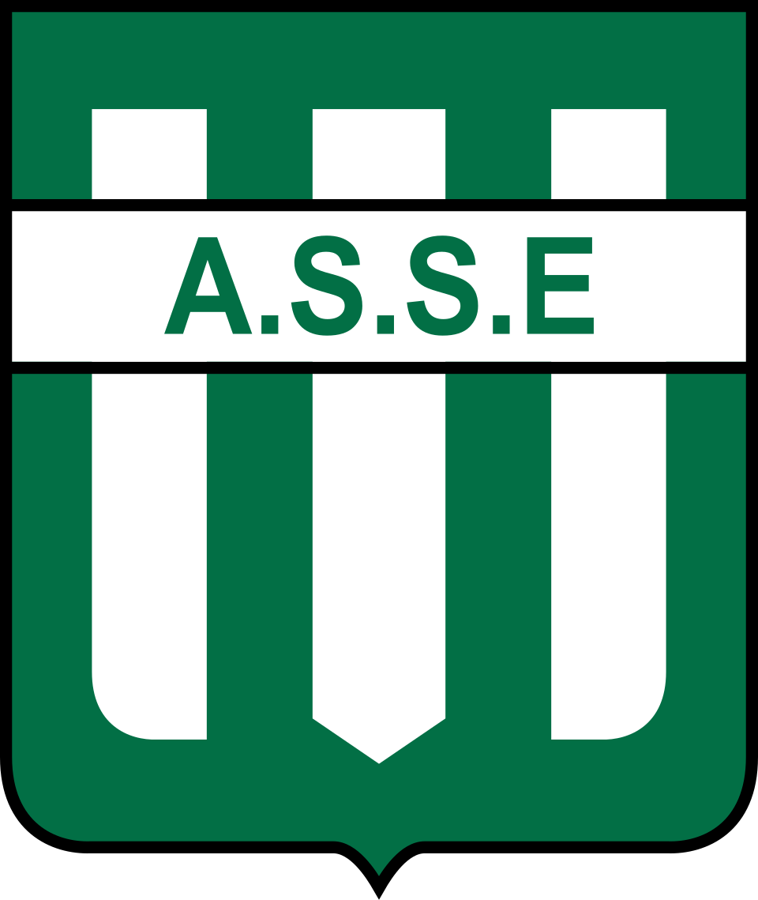
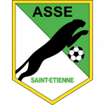
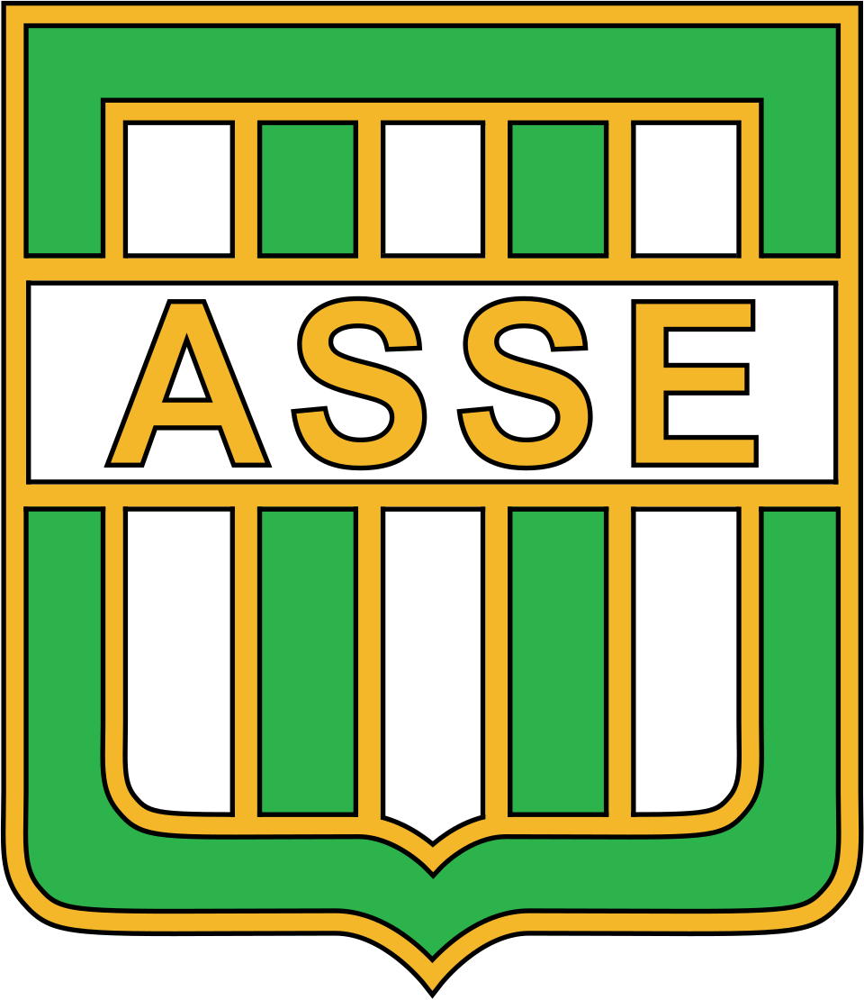
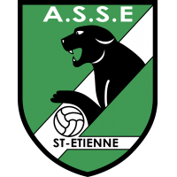
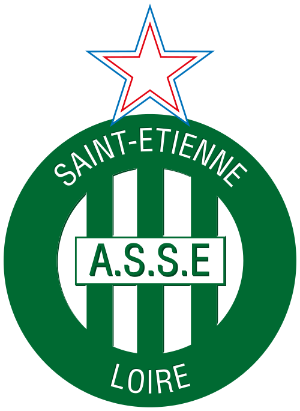

Il est créé le 26 juin 1933, lors de la création de l’AS Saint-Étienne. Il reprend les couleurs historiques de Casino, présent sur les stores extérieurs du premier magasin. Majoritairement blanc, le vert est présent sur la dénomination du club déjà affichée à l’époque : « l’ASSE » et marque également le pourtour du logo.

En 1950, le design évolue, la dénomination « ASSE » est toujours présente et le vert devient la couleur majoritaire. L’AS Saint-Étienne connait surtout avec ce logo son premier grand succès : le championnat de France de 1957. Une réussite qui l’envoie en coupe d’Europe des Clubs Champions.

Les bandes verticales vertes et blanches faisant référence aux stores extérieurs de Casino apparaissent en 1960. Elles inspireront les logos suivants. La dénomination « A.S.S.E » est toujours exhibée.

Ce logo est le premier à arborer une panthère. La raison est simple : elle est malienne, est arrivée à Saint-Étienne en septembre 1967 et joue sur le front de l'attaque. Salif Keïta, Stéphanois jusqu’en 1972, dispute 186 matchs et marque 164 buts, une performance qui lui permet d'être encore aujourd'hui le second meilleur buteur de l’histoire de l’ASSE. La panthère apparaît un an après son arrivée. Le club souhaite se renouveler un peu en changeant de logo. Un beau jour, le docteur Julliand, un proche du club, remarque sur l’émission télé-philatélie présentée sur TF1, une série de timbres venant du Mali. Ces timbres présentent souvent la panthère noire. L’idée est donc toute trouvée et le club lance un concours auprès de l’École des Beaux-Arts. C'est Roger Viou qui dessine cette panthère, à jamais rattachée à l’AS Saint-Étienne. Sur ce logo, la panthère est dite bondissante avec un ballon juste à côté pour évoquer l’esprit du club. Et pour la première fois une double dénomination « ASSE » et « Saint-Étienne » est présente.

Si la panthère disparaît du logo en 1980, elle reste un emblème indissociable du club. L’écusson reprend sa forme d’origine et les bandes verticales vertes et blanches du troisième logo sont également de retour. C’est la première fois que la mention « A.S Saint-Étienne » est utilisée. Le pourtour en or fait référence au palmarès du club remporté depuis 1957.

En 1987, la panthère signe une brève réapparition mais elle est beaucoup moins utilisée et moins appréciée des supporters. Le concept de ce logo est le même que celui de 1968 avec l'animal dit rugissant. Elle s'accompagne d'une double dénomination « ASSE » et « St-Étienne » et de la présence d'un ballon ... qui, entre nous, ressemble d'ailleurs plus à un ballon de volley-ball. Ce logo aura une durée de vie très courte.

1988

1994

Créé en 1992, il a connu quelques petits ajustements au début de son utilisation. En 1992, il n’y a pas d’étoile Bleu-Blanc-Rouge au-dessus du logo, elle est rajoutée un an après, en 1993, symbolisant les 10 titres de champion de France. Les bandes verticales vertes et blanches sont toujours utilisées et trois dénominations figurent sur le logo « Saint-Étienne », « A.S.S.E » et « Loire ». Au début des années 2000, le logo est légèrement modifié avec une mise en relief, donnant un effet de 3D à l’écusson. Ce logo reste aujourd’hui le plus ancien pour un club de Ligue 1 Uber Eats, et ce sera le cas jusqu'au 30 juin 2022.

2022